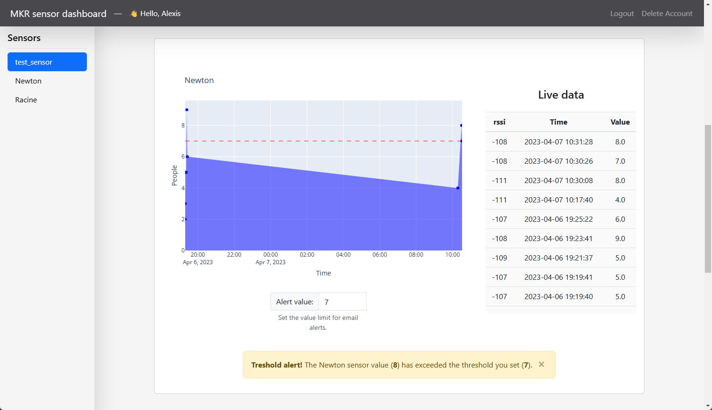

Loraboard
Open-source simple dashboard for MKR1310 sensor. The MKR will connect to a LoRa gateway, then send data to TheThingsNetwork. The application will retrieve the live data from TTN, store it into a database and print it on the live dashboard.
Built for an IoT class from UQAC
Database, Authentication: SQLite
HTML: Bootstrap
Mail: Google API
MKR Firmware: Arduino
Deployment - TODO Video title (video presentation)
Start the app
Step 1 - Download the code
$ git clone https://github.com/tartopommes/Loraboard.git
$ cd Loraboard
Step 2 - Install the libraries (if you wish the use a virtual environment, see Run with python virtual environment)
python -m pip pip install -r requirements.txt
Step 3 - Make sure super_secret.py exists and is correct
Username = "you-ttn-project-name"
Username_ssh = f"{Username}@ttn"
Password = "XXXXX.XXXXXXXXXXXXXXXXXXXXXXXXXXXXXXXXXXXXXXX.XXXXXXXXXXXXXXXXXXXXXXXXXXXXXXXXXXXXXXXXXXXXXXXXXXXX" # 99 characters in full maj
public_address_url = "nam1.cloud.thethings.network"
public_address_port = 1883
public_address = f"{public_address_url}:{public_address_port}"
Step 4 - Setup the alert sender mail address
Go to Loraboard/database/gestion.py and edit the variable SENDER
# MAILS
SENDER = 'your-email@gmail.com' # set your email address here, must belong to gmail.com
Then the application will need to create a token.json file. Once you started the application, you will automatically be redirected to a Google connection page to select your Google account. Then you will have a danger alert, because the Google application we are using hasn’t been verified by Google yet. However it’s completely fine, the Google application is only used for this project to send email alert, you can click on Advanced settings and then click on Access and finally Continue. You are free not to accept, in this case you purposely reject email alert notifications.
Step 5 - Start the App with python
python main.py
Step 6 - Visit the dashboard python
Go to the default URL: http://localhost:5000/
Run with python virtual environment
You may want to use a virtual environment for the application, here’s how to proceed
Step 1 - install virtualenv with python
python -m pip install --upgrade pip
python -m pip install --user virtualenv
python -m venv venv
Step 2 - activate the virtual environment
Unix, MacOS
source venv/bin/activate
Windows
.\venv\Scripts\activate
Step 3 - install the libraries on the virtual environment
python -p pip install --upgrade pip
python -m pip install -r requirements.txt
Reset the database
When you start the application for the first time, a database file is created: database/users.db. Delete this file after shutting down your application and it will be recreated (with default values) the next time you start it.